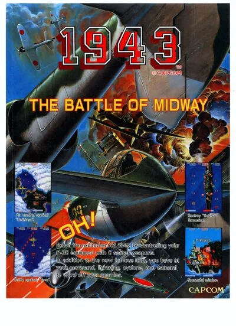

FBA (FinalBurn Alpha)
1943: The Battle of Midway
- Año: 1987
- Desarrollador: Capcom
- Género: Disparos / Vuelo vertical
- Jugadores: 2 jugadores
- Probando
- A dos: a la vez
Matamarcianos vertical de Capcom, continuación de 1942: un piloto estadounidense, con su P-38, se enfrenta a la flota japonesa en la batalla de Midway. En vez de vidas hay energía, que también se gasta con los ataques especiales.
Controles
botones según las guías: que B dispara, A hace el ataque especial (rayo, tsunami o ciclón) y B + A a la vez, el rizo.
Dos botones.
| Panel | Juego |
|---|---|
 | Disparar ⚠️ |
 | Hacer un ataque especial (rayo, tsunami o ciclón) ⚠️ |
  | Empezar |
 | Meter una moneda |
+  | Salir del juego |
El panel en FBA (FinalBurn Alpha)

🔎 Para mirar en la bartop (2)
Comprobaciones rápidas: con mirarlo jugando un momento basta. Cuéntamelo en las pruebas.
- : Disparar ⚠️ — ¿es así?
- : Hacer un ataque especial (rayo, tsunami o ciclón) ⚠️ — ¿es así?
Argumento
Segunda Guerra Mundial, en el Pacífico, cerca del atolón de Midway. La flota aérea japonesa ha atacado un portaaviones estadounidense, y un as de la Marina de EE. UU., sin nombre, despega en su caza P-38 Lightning para vengarlo.
Su misión es acabar con todas las fuerzas aéreas y navales japonesas a lo largo de 16 batallas. Se basa en la batalla de Midway (1942), cuando la flota japonesa atacó el atolón: para muchos historiadores, la que cambió el curso de la guerra.
Final: la última batalla es contra el acorazado Yamato, el jefe final.
Fuentes
Jugabilidad
Lo marcado con ⚠️ no está probado en la bartop.
- Tipo de juego: matamarcianos vertical, continuación de 1942, con muchas más armas y un avión mejorado. Se juega solo o con dos jugadores a la vez.
- Sencillo y adictivo: se aprende enseguida y engancha: apetece volver a jugar cada vez que te derriban.
- Gráficos y sonido: de línea clásica, pero fluidos y rápidos, lo que ayuda a jugar; casi sin efectos de sonido y con una música algo repetitiva (aunque mejor que la de 1942).
- Estructura: 16 fases (detalle en «Guía de niveles»).
- Energía en vez de vidas: solo hay una vida, que es un medidor de combustible. Baja poco a poco con el tiempo, mucho al recibir disparos y también al usar los ataques especiales. Se recarga con los objetos.
- Dos jugadores: si los dos aviones se superponen, el que tiene más energía le pasa parte al otro.
- Mejoras: al derribar una formación entera de aviones rojos aparece un objeto (energía o un arma nueva). Si le disparas, va cambiando de tipo.
- Ataques especiales: gastan energía, pero no te pueden matar; si te queda poca, no se pueden usar. El rizo te hace invulnerable mientras dura.
Botones según las guías (⚠️ por confirmar)
| Recreativa | Panel | Acción |
|---|---|---|
| Botón 1 | B | Disparar |
| Botón 2 | A | Hacer un ataque especial (rayo, tsunami o ciclón, según la situación) |
| Botón 1 + Botón 2 | B + A | Hacer un rizo (invulnerable mientras dura; número limitado) |
Fuentes
Guía de niveles
Son 16 fases:
- 11 batallas aire-mar, con un acorazado o un portaaviones como jefe.
- 5 batallas solo en el aire, contra una escuadrilla de bombarderos o contra un único bombardero pesado (hay que dispararle a los motores).
- La última fase acaba con el acorazado Yamato.
⚠️ No he encontrado un longplay con las fases marcadas: el de «Vídeos» es la mejor referencia.
Fuentes
Objetos
| Objeto | Qué hace |
|---|---|
| POW | Recupera 8 puntos de energía. Sale al derribar una formación de aviones rojos. |
| Depósito de energía | Recupera 24 puntos. Se consigue disparando a un POW o a un arma hasta que cambie. |
| Yashichi | Rellena toda la energía. A veces está escondido y aparece al disparar en su sitio. |
| Estrella | Muy rara: 5.000 puntos y rellena el tiempo del arma especial. |
| Cazas laterales | Dos aviones pequeños a los lados que disparan contigo; caen con pocos golpes. |
| Escopeta | Disparo ancho y corto que también destruye las balas enemigas. |
| Ametralladora triple | Dispara también en diagonal. |
| Auto | Ráfaga de 8 balas en cada pulsación. |
| Obús | Disparo en línea, muy potente; el único que dispara solo manteniendo el botón. |
| Láser | El arma más rara: atraviesa enemigos. Sale del gato de la suerte (maneki-neko) que parpadea por la pantalla. |
Fuentes
Trucos y secretos
Lo marcado con ⚠️ no está probado en la bartop.
Secretos
- Objetos ocultos de puntos: al disparar en ciertos sitios o hacer ciertas cosas aparecen:
- Brotes de bambú (sobrevolando ciertas nubes): 500 puntos al aparecer y 2.000 al cogerlos.
- Fresa (disparando al acorazado pequeño más alto justo antes de bajar a por ellos): 10.000.
- Barriles (disparando en sitios ocultos cerca del agua): 10.000.
- Libélula, la más difícil: 10.000.
- Vaca (disparando en el sitio exacto): 20.000.
- Mobi-chan: al destruir un acorazado al 100 %, el puente explota en cuatro trozos (10.000 puntos cada uno si los derribas) y a veces escapa Mobi-chan, de Side Arms: 100.000 puntos.
- Trucos por fase: cada fase tiene uno distinto (mantener el disparo o el joystick en una dirección) que da las armas al máximo. ⚠️ Las fuentes no detallan cuál es en cada fase.
Fuentes
Longplay

Partida completa de la recreativa (46 min), de HIDEFACES: 1943: The Battle Of Midway - Arcade Complete Playthrough #128【Longplays Land】.